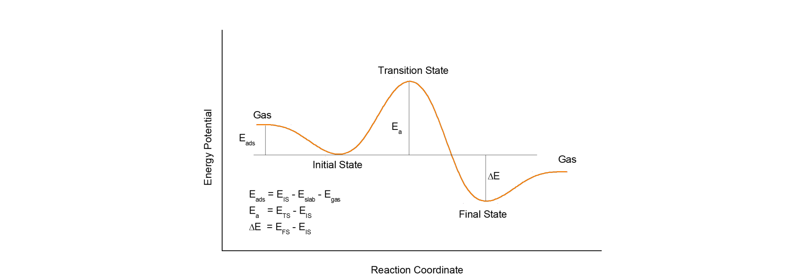

过渡态计算

以官网案例为例：
1） http://www.vasp.at/vasp-workshop/tutorials/tutorial_ammonia_flipping.pdf Vasp官网的一个PPT介绍，这个PPT有些年头了，不过对于我们学习还是很有帮助的。建议看完PPT里面的内容（最好是自己练习一遍后），再继续下面的学习。 2） https://cms.mpi.univie.ac.at/wiki/index.php/Category:Examples VASP wiki网页中关于过渡态计算的例子——$\ce{NH3}$分子的反转
初始结构的搭建优化：
ammonia flipping 1.0 +9.0000000000 +0.0000000000 +0.0000000000 +0.0000000000 +10.0000000000 +0.0000000000 +0.0000000000 +0.0000000000 +11.0000000000 H N 3 1 Selective Cartesian +3.8185740000 +3.9721220000 +4.3936400000 T T T +3.0000000000 +2.5542720000 +4.3936400000 T T T +2.1814260000 +3.9721220000 +4.3936400000 T T T +3.0000000000 +3.5000000000 +4.0000000000 F F FSystem = NH3 ISMEAR = 0 SIMGA = 0.01 ALGO = FAST ENCUT = 450 EDIFF = 1E-5 NWRITE = 0 LWAVE = .FALSE. LCHARG = .FALSE. IBRION = 2 POTIM = 0.1 EDIFFG = -0.02 NSW = 100K-POINTS 0 Gamma 1 1 1 0 0 0末态结构的搭建优化：
仔细观察这个图，我们可以保持H原子的坐标不变，只需要将N原子的坐标修改一下。初始结构里面，三个H原子在xy平面上，N与H原子z方向的距离为0.3929 Å。如果N原子翻转过去，那么它的坐标将会是： 4.3929 + 0.3929 = 4.7858 Å
过渡态结构的优化 ：
过渡态是一个平面的结构，我们可以按照前面末态结构搭建的思想弄一个初始的过渡态结构出来。即直接将N原子的z方向坐标修改成H原子的
对比下前面初末态结构的坐标，你会发现Z 方向上被固定住了
+3.8177218605 +3.9717738141 +4.3929644172 T T F +3.0000000000 +2.5559112549 +4.3926756556 T T F +2.1822781395 +3.9717738141 +4.3929644172 T T F +3.0000000000 +3.5000000000 +4.3929644172 F F F这样做是强制优化过程中，所有的原子都在xy平面上。我们只优化H原面的坐标。
频率计算：（过渡态的验证）
验证一个算完的过渡态是不是真正过渡态的时候，我们需要用到频率计算。因为过渡态只有一个虚频。（自己看书去学习为什么只有一个虚频？）复习下前面我们讲过的频率计算的细节： 1） IBRION = 5 2） POTIM = 0.015 3） NFREE = 2 4） NSW = 1 这里我们需要另外加一个无关痛痒的参数： 5）NWRITE = 2 （或者不设置，默认值是2） NWRITE = 0 。当参数为0，使用Jmol可视化频率计算结果的时候：你会发现所有的原子都是同一个颜色，当使用NWRITE的默认值2的时候，则是正常的：这是因为NWRITE = 0 写入的OUTCAR的数据太少，Jmol无法获取元素相关的参数用来可视化。
提取频率相关的参数，可以使用下面的命令：
grep cm-1 OUTCAR提取所有的频率（检查频率结果推荐使用）grep 'i=' OUTCAR提取所有的虚频 （基本没啥用）grep 'f =' OUTCAR提取所有的非虚频 （计算零点能推荐使用）过渡态只是一个结构而已，我们需要做的就是如何通过一些计算的技巧和方法来获取这些结构。很多人一提到过渡态就会想到使用VTST编译的VASP程序算neb（Nudged Elastic Band method），其实neb也仅仅是大家常用的一个方法而已，除此之外，还有很多。而最关键的就是通过结构化学的基础知识来搭建、计算并判断这些过渡态结构背后的物理化学意义，通俗点说就是：算的对不对，你要自己心里有个数。
例二：计算乙烷分子（CH CH ）绕C—C键旋转的过渡态
- 首先我们要搭建一个初始的乙烷构型。把C—C键的两个C平行于z轴
- 优化过程中，两个C原子在xy方向的坐标被固定住了。
- 在重叠式的结构中，乙烷分子的两个CH 关于穿过CC轴的xy平面是对称的。所以，我们将上面CH 中H原子的xy坐标修改的和下面部分一样。 注意： 1） 只修改xy坐标， z坐标保持不变 2） 观察图中： 3和8， 4和7， 以及5 和6 的xy坐标。 3） 固定xy坐标，直接优化z方向
- 对比一下交错式和重叠式C—C的键长
- 在频率计算的时候，把所有的原子都放开，通过命令发现，有个256 $cm^{-1}$的虚频。使用Jmol可视化一下
例三：通过CI-NEB（Climbing Image Nudged Elastic Band）计算H原子在Ru(0001)表面上的扩散过程
NEB计算过渡态的准备工作
VTST编译
cd vasp.5.4.4 cp src/chain.F src/chain.F-org cp vtstcode-171/* src/ #修改src/main.F源码 CALL CHAIN_FORCE(T_INFO%NIONS,DYN%POSION,TOTEN,TIFOR, & LATT_CUR%A,LATT_CUR%B,IO%IU6) 变为 CALL CHAIN_FORCE(T_INFO%NIONS,DYN%POSION,TOTEN,TIFOR, & TSIF,LATT_CUR%A,LATT_CUR%B,IO%IU6) ! LATT_CUR%A,LATT_CUR%B,IO%IU6) #修改编译配置src/.objects，在chain.o前（大概第67行）添加如下内容 bfgs.o dynmat.o instanton.o lbfgs.o sd.o cg.o dimer.o bbm.o \ fire.o lanczos.o neb.o qm.o opt.o \ #检查 which ifort echo $MKLROOT which mpiifort cp arch/makefile.include.linux_intel makefile.include #为防止以前编译好的.o和.a文件与新修改的编译配置冲突 make veryclean make使用：
nebmake.pl IS FS N ****插入的点数要保证可以被使用的核数整除
同样核数下， N设置的越大，计算每个image所需要的核数就会减少，导致计算变慢
检查初末态结构的原子坐标是否是一一对应
p4v 0*/POSCAR我们将00 到 09 这10个文件夹作为一个整体，看作一个POSCAR。和在这些文件夹相同的目录下， 有INCAR, KPOINTS 和 POTCAR文件。
注意不要错误把INCAR, KPOINTS, POTCAR 和脚本都复制到images对应的文件夹中。知道了错误的准备文件，那下面我们看一下正确的做法:
把0{0..9}这些文件夹作为一个整体，看作POSCAR
快速粗算——在粗算的时候，建议使用低密度的的K点。上来就用高密度的K点计算，即使是土豪，也是不建议的。那么K点密度怎么个低法呢？ 直接来个极端就好了，用gamma点。前面我们还讲过，如果用gamma点计算的时候，需要把slab的原子固定住。
稳定的过渡态计算中非常实用小脚本：POSCARtoolkit.py
chmod u+x POSCARtoolkit.py并加入PATH或bin文件夹实现分数坐标（Direct）向笛卡尔坐标（Cartesian）的转换：
POSCARtoolkit.py -i POSCAR原子层数的固定：
POSCARtoolkit.py -i POSCAR_C -f描述1） 脚本会根据阈值（默认1.5 Å）划分层，这里的1.5 Å指的是层间距。
描述2） 用户可以通过在脚本后面增加参数 -y 1.0 自己定义更小的阈值
描述3） 如果不想每次使用的时候使用参数-y，用户也可以直接在脚本里面修改阈值的大小，如下如，在第40行中，默认的阈值1.5被修改0.5。
除了固定层数外，该脚本允许用户选择部分原子放开，固定或者部分放开。这个功能实现的前提是POSCAR 或者 CONTCAR 中有
Selective dynamics信息。如果没有，则可先固定任意的原子层（POSCARtoolkit.py -i CONTCAR -f ），这样的话Selective dynamics就会被写入到输出文件POSCAR_C中。然后用户再对POSCAR_C进行原子选择性操作。 下面我们先详细介绍一下脚本的用法，然后再加一些实例的操作来帮助用户理解。用法：POSCARtoolkit.py -i POSCAR_C [-f or -r] -s [your selections]
描述1)：POSCARtoolkit.py -i POSCAR_C 我们对输入文件POSCAR_C 进行操作
描述2): -f 和 –r 配合后面的 –s 进行操作。
- -f 表示表示固定（fix）选中的原子，
- -r 代表放开（relax）选中的原子，由于原子在xyz三个方向上都可以选择放开，所以使用-r的时候要配合F T 来进行操作。 如下：
- -r FFT 代表只放开z方向，同理 –r TTF， -r TFT， -r TTT， -r FTT这些你就知道是怎么回事了。
- -r 后面的FFT这三个字母之间可以有空格，也可以没有。也就是说：FFT 和 F FT， FF T 以及 F F T 效果是一样的。
描述3） -s 选项表示选择部分原子, 后面是你要选择的原子，选择项如下：
- all 表示选中所有原子
- 1-5 6 9 表示选中 第1-5个和6,9 号原子
- Pt 表示选中所有的Pt原子
- 1-5 6 9 Pt 表示选中 第1-5个和6,9 号原子和所有的Pt原子
过渡态计算INCAR的设置：
LCLIMB = .TRUE.告诉vasp你要开始使用CI-NEB方法算过渡态了IMAGES = 8告诉vasp，你插了8个点。VASP不是智能的，根据目录下文件夹的数目自动帮你数一下插点的个数，我们要自己设置一下。过渡态计算的优化器（Optimizer）
CI-NEB是基于Force 也就是力来获取能量最低的反应路径。优化的方法有2个选择，一个是VASP默认的。一个是VTST中自带的。
IBRION =1 (quasi-Newton) 和3 (quick-min) 是基于力的优化方法。一般来说，如果你感觉自己插的点基本上就是反应的路径了，可以使用IBRION= 1。如果你的初始和末态结构不是很理想，插的点也是马马虎虎，那么3则是一个很好的选择。IBRION选择完了，我们还要设置一个合理的POTIM。个人经验0.1-1.0之间都是可以接受的。
VTST中也自带了一些基于力的优化方法
我们先要关闭VASP自带的，加下面2个参数：
IBRION = 3 POTIM = 0可以通过IOPT来选择自己喜欢的了
Optimizer input parameters The following parameters are readfrom the INCAR file. (IOPT = 0) Use VASP optimizersspecified from IBRION (default) (IOPT = 1) LBFGS = Limited-memoryBroyden-Fletcher-Goldfarb-Shanno (IOPT = 2) CG = Conjugate Gradient (IOPT = 3) QM = Quick-Min (IOPT = 4) SD = Steepest Descent (IOPT =7) FIRE = Fast Inertial Relaxation Engine官网建议使用1或者2
SPRING = -5 (这是默认值)——The nudged elastic band (NEB) is a method for finding saddle points and minimum energy paths between known reactants and products. The method works by optimizing a number of intermediate images along the reaction path. Each image finds the lowest energy possible while maintaining equal spacing to neighboring images. This constrained optimization is done by adding spring forces along the band between images and by projecting out the component of the force due to the potential perpendicular to the band.
什么意思呢？打个比方，这8个IMAGES就是一条绳上的8只蚂蚱，这些蚂蚱只能在一个方向上跳，在优化的时候，蚂蚱跳的太远，或者太偏就会被拉回来。拉回来的这个力就是通过SPRING这个参数来设置的。而我们之前的优化优化计算中，一条绳上只栓一只蚂蚱，该蚂蚱则比较自由，前后左右可以随便跳，并且没有人往回拽，这也是过渡态计算和普通优化所不同的地方。具体的理论部分，大家自行查阅NEB相关的参考文献。
如果你算的一个基元反应，两个原子之间的键很强，那么我们就需要将SPRING这个参数设置的更负一些，比如SPRING= -10，-15 或者-20。（不一定是-5的倍数，也可以是-6，-11 等。）如果你不知道怎么设置，一般来说默认值-5就足够用了。
收敛相关的参数（粗算中的芝麻部分）：
EDIFF = 1E-4 完全够用，不放心可以设置成-5；
NELM = 60 或者使用默认值40；
EDIFFG: 由于我们这一步是粗算，不用那么精确，EDIFFG = -0.05 完全够用了；
NSW: 个人经验，一般跑个50-60步左右就可以大体看个样子出来了，不用非得等计算达到EDIFFG设置的收敛标准。所以，前面的EDIFFG只是个形式罢了，这里我们先让这个参数占个坑，避免下一步提高精度计算的时候忘记这个参数。
小结：
LCLIMB = .TRUE. # 用CI-NEB方法算TS IMAGES = 8 # 反应路径插了8个点 IBRION = 1 # 初始结构（路径）感觉不太好，可以用 IBRION = 3 POTIM = 0.2 # 一般0.2可以满足大部分的情况 SPRING = -5 # 约束不同IMAGES之间的力 EDIFF = 1E-4 # 电子步的收敛标准 EDIFFG = -0.05 # 离子步的收敛标准，在粗算中就是个摆设 NSW = 60 # 粗算中50-100均可批量查看文件：
ase-gui 0*/CONTCAR通过vaspkit+VMD（见chapter 8）
提交任务后，我们不能守株待兔似的等着
NEB算完，而是要勤检查结果，因为NEB的计算中，也会经常出现结构跑乱的情况。那么该怎么检查呢？ 一看能量，二看结构，三看能量和结构能量是否正常
使用
vim打开nebresults.pl文件，将58-71行注释掉，或者可以使用sed命令：sed -i '58,71s/^/#/g' nebresults.plgs mep.eps查看结果将前面的计算步骤保存起来，然后将CONTCAR复制成POSCAR用以下一步的计算的脚本
#!/usr/bin/env bash mv POSCAR POSCAR-$1 mv OUTCAR OUTCAR-$1 mv OSZICAR OSZICAR-$1 mv vasprun.xml vasprun.xml-$1 mv EIGENVAL EIGENVAL-$1 mv IBZKPT IBZKPT-$1 cp CONTCAR CONTCAR-$1 mv CONTCAR POSCAR
1） 我们计算的是金属表面上H原子的扩散；
2） 使用gamma点计算的时候，slab固定住了；
3）gamma点计算结束后，检查结果：
- 看到有一个漂亮的NEB图；
- 能量变化也是稳稳妥妥滴；
- 结构查看也没啥异常情况；
4） 在确认第3)步检查OK之后，将gamma点的计算备份；增大K点至3x3x1继续算。
5）计算结束后，重复第3）步的检查，确认没啥问题。